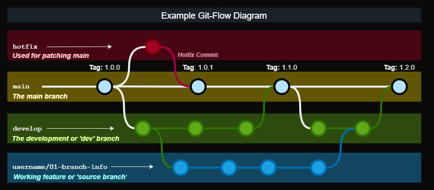
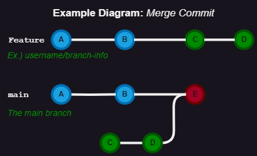
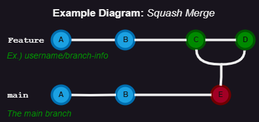
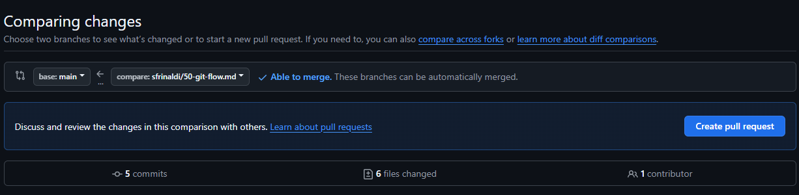
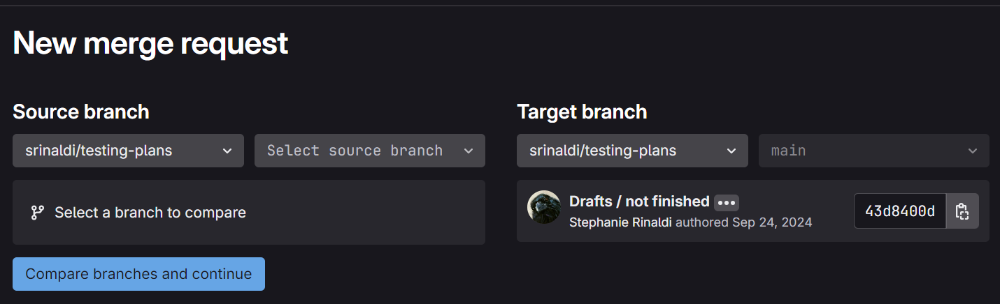
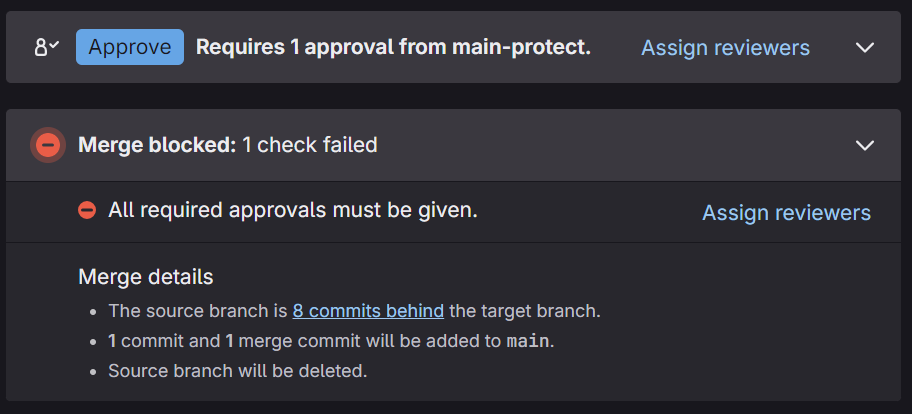

Git-Flow Workflow Guide
This document provides information of key information related to git-flow practices used within UASAL. This includes general repository standards, how to submit changes to protected branches and general git practices. An overview of GitHub and GitLab differences and how to create a Pull or Merge Request is detailed as well.
General Information
The following section details the basic information related to git-flow that isn’t exclusive to GitHub or GitLab but tied to the generating and usage of a repository.
Repositories
A repository is a location to store and manage items such as documents, software, or any other type of data. Both GitHub and GitLab repositories allow for version controlling information to assist in traceability with using git. Every repository will have at least one or more ‘branches’ with content at different stages. Refer to the Branches section for more information.
Creating a Repository
If creating a new repository under the UASAL organization, use the following naming and setting guidelines in place when generating a new repo.
Naming
Repositories should use the following naming guidelines:
Keep repository name short as possible
Keep repository name description (while short) to properly indicate what the repo contains.
Use all lower-case letters when appropriate
Use snake-case
Utilize dashes
-over underscores_to chain words
Settings
Repository baseline settings should be set at the organization level and or be based from template repositories (if applicable / available). If not, verify the following settings are enabled within the repository when generating a new one within UASAL.
General Settings
The following are general settings that are used in UASAL repositories. Depending upon the usage and intention of the repo, they may require modification.
Verify Default Branch is either
mainordevelop(depending on repo)If there are active adjustments that are frequent being applied, the default branch should be
developIf there are released stable versions for content and less active development, the default branch should be
main
Verify
Issuesis turned ONCheck
Allow forkingis either enabled or disabled depending on the intent of the repoGenerally
Allow forkingis disabled but dependent on purpose of repositoryRefer to the Forks section for more information / guidance
Verify
Discussionsis turned ONVerify
Projectsis turned ONVerify
Allow merge commitsis turned ONVerify
Allow squash mergingis turned ONVerify
Default Commit MessageunderAllow squash mergingis set to Pull request title and commit details.Verify
Always suggest updating pull request branchesis turned ONVerify
Allow auto-mergeis turned OFFVerify
Automatically delete head branchesis turned ONMake sure the
developbranch if being used in the repository is protected so it’s not impacted by this.
Branch Settings
Verify a ruleset is applied to
mainbranchGenerally want to have
mainsetup so a PR is required to push content tooAdding additional settings for if x amount of reviewers is needed depends on the repo content
Configuration repositories or other version controlled repos should have reviewers required typically
If repo is for sharing development (such as public repos) or require any content that needs to be strict on change control / versioning (such as requirements ), a ruleset should be applied
Verify a ruleset is applied to
developbranchIf the
developbranch being used in the repo, a ruleset to require a PR to be made to updatedevelopshould be appliedSimilar guidelines listed under for the
mainbranch apply todevelopas wellThe use of a
developbranch allows pre-testing of features and or a combination of features before impactingmainso that there is alway a stablemainor base to the repository
Verify both rulesets are
EnabledVerify both rulesets
Restrict deletionsVerify both rulesets
Require linear historyVerify both rulesets
Require a pull request before mergingVerify both rulesets
Block force pushes
Access Settings
Verify setting up access to the repo to needed
team members by doing the following under the
Collaborators and teams option within settings.
Add teams via
Organization accessunder Manage access to repo as applicable.Repo owners are encouraged to add entire teams rather than individual members.
Forks
Forks are similar to clones of a repository but are mainly used for collaborating with external organization members.
If you are a UASAL team member, then when editing or adding a new feature that will be merged into the original repository source, you should generally use a branch instead of a fork.
Fork vs Branch
Use the following breakdowns for considering when to use a fork over a branch. Note that UASAL team members are generally encouraged to use branches when making/proposing changes.
Branch:
Have write access to the original repository
Applying quick fixes collaboratively within the same project
Applying / developing features collaboratively within the same project
Need to synchronize your code with the main repository
Need to have your content easily accessible / viewable for members in the same project
Fork:
For experimenting / testing items that do not necessary need to be collaboratively
Ex.) CI workflow testing, verifying triggers for workflow are functional after PR/MR, etc.
Non-critical external contributions to the base project
Contributing to an open-source project that require changes to be done independently before merging
For using the original project as a starting point that you are developing independently
If more information is needed, refer to Graphite and a related community post on GitHub for a breakdown between the difference between a branch and a fork and when to use them.
Warnings
NOTES:
You cannot use repo secrets if there is a CI process on the repository being forked.
Current workflows will not function in the fork whether inside or outside of a pull/merge request as well.
Forks can become out of date! Keep forks synced with base repository if a fork is needed!
Refer to the GitHub Docs for additional support.
Refer to the GitHub Docs on Forks for more information.
Branches
If there is active development in the repository with multiple
contributors, there should be both a main and a develop branch.
Refer to the Branch Types section for more details on the
functionality / purpose of each branch type.
Any content that needs to be added whether a fix or a feature needs to start on its own branch before its merged into develop and/or main via a Pull or a Merge Request (depending on if its GitHub or GitLab). In special cases for where a ‘hotfix’ needs to be applied to the main branch, it should be based off of the main branch and still go through a pull/merge request.
Refer to the GitHub Docs for additional information about branches if needed.
Branch Naming
UASAL has adopted to the following naming convention branches:
maininstead of masterdevelopinstead of devFeature Branches:
username/branch-descriptionHotfix Branches:
hotfix/fix-name
Do NOT have the character # in the branch name or any other
special characters that are latex sensitive as this will cause issues
when it grabs git information. Either drop the issue number call out or
just have the number in the branch name.
Example Acceptable Branch Names:
sfrinaldi/ci-testingsfrinaldi/fix-publishinghotfix/ci-compile-addon
Naming Overview
Some of the following rules are already imposed with git but are listed anyways for reference.
Never name branches (or anything else) something that is not safe for work or you’re not comfortable with all of your colleagues seeing.
Keep branch names as short as possible
Use lower-cased letter for branch names
Use dashes over underscores whenever possible
Use main as the main branch / not master
Use develop as the develop branch / not dev
Never have duplicate main or develop branches
Never use reserved names for branches
Examples: HEAD, FETCH_HEAD, ORIG_HEAD
Branch Types
Refer to the following diagram to see an overview of how the different branches should interact with each other.

Main
The main branch should never be committed to directly except for the initial commit. Items that are to be added to main should be tested previously and reviewed by the necessary parties via a Pull or a Merge Request. (Dependent on repository content)
Develop
The develop branch is a point where multiple features can be merged into before main to test the integration. This allows for tasks / features to be broken up more for multiple users to work on with limited merge conflicts (depending on how its organized). This allows for a combination of features to be added and tested before it is released into main via a pull or merge request.
Feature Branches
A feature branch is your working branch that you are implementing a fix or a feature too that will go into the develop branch. This is not to be confused with a hotfix branch and is ‘based’ or ‘derived’ from the develop branch.
Hotfix Branches
A hotfix branch applies a quick fix to the main branch and is
‘derived’ from the main branch instead of the develop branch. This is
normally for fixing small issues that do not need to increment a new
release version / tag.
NOTE: A pull or merge request is still required for a hotfix branch to be applied to the main branch.
Merge Methods
There are a couple different methods of updating branches that require either a Pull or a Merge Request in order to go through. Each method impacts the git history differently and have their usage.
Merge Commit
Normally a merge commit will be the default option when creating a Pull
Request and a Merge Request. All commits from the feature branch
will be added to the base branch that is specified within the Pull /
Merge Request.

Example diagram for a Merge Commit.
It is best to ‘pre-squash’ commits that are similar with each other in
the original feature branch before doing a merge commit to keep the
git history clean / relevant at the top level.
NOTE:Notice in the reference diagram for visualizing a merge
commit, a direct reference to the original feature branch that ‘C’
and ‘D’ came from is not specified.
Applicable Scenarios
The following are acceptable scenarios to choose a merge commit over other options:
Multiple ‘features’ or ‘fixes’ on the same
featurebranch.Allows for easier reverting per commits relating to features or fixes that need troubleshooting still.
All commit information is desired to be retained.
Commit messages are all cleaned up and structured.
No extra commits of ‘fix typos’, etc.
Repository is not under strictly version controlled / flexible.
NOTE: Pre-squashing related commits per features, fixes, and files edited is highly recommended.
Squash Merging
In a squash merge, all commits in a feature branch are squashed into
one commit. This means the individual commit messages from each
contributor in that original feature branch are combined into
one commit when merging.

Example diagram for a Squash Merge.
NOTE: Information will be lost on when specific commits / changes
were originally made vs when the squash commit was applied. You might
run into conflict issues if you continue to work on the feature
branch after doing a squash merge. This can be avoided by making sure
the feature branch is deleted after a Merge/Pull Request is
completed.
Applicable Scenarios
Repository is under a strict version control protocol.
Git History is desired to be ‘cleaned’ / less populated with unrelated information.
The
featurebranch that has commits being merged in is planned to be deleted after Pull/Merge Request goes through.Prevents potential future merge conflicts.
Majority of commits in the
featurebranch in the Pull/Merge Request are not necessarily important and were more for saving information / work-in-progress commits.
GitHub Overview
Non-export controlled content is hosted in the UASAL GitHub organization repositories.
GitHub has a variety of documentation available already on the different features available and how to get started. Refer to the GitHub Docs if you need more information on other items not supplied in this guide.
Pull Requests
Pull Requests (PRs) are an equivalent of Merge Requests (MRs) that is the term used with GitLab. A Pull Request is a process of requesting content to be pulled into another branch (normally a protected one).
When creating a new Pull Request, you will see something similar to the
screenshot provided below. The base is the branch you want to push
your update too. (Equivalent to the ``target`` branch in GitLab) The
branch you select under the compare option is the name of the branch
with changes you want to apply to the base branch. (Equivalent to
the ``source`` branch for GitLab)
For more information, please refer to the GitHub Docs on Pull Requests for details.

Example PR screenshot options when selecting to create a new pull request on GitHub.
NOTE: If a Pull Request template is available in the repository, always select an appropriate template whenever possible over no template if it applies. An example PR template can be found here: pull_request_template.md
PR Naming
When creating a new Pull Request, verify the name of the branch is included in the title of the PR.
Ex.) Merge sfrinaldi/sub-class-fix into develop
PR Process
For an abridged version, refer to the Pull Request Checklist instead.
Before Review
With using the previous information indicated in the above sections for
PR Naming and general Pull Requests, create a new Pull Request
on GitHub with using the appropriate branches for the base and
compare. If there is still content to be added to the branch,
select Create draft PR during the PR creation process.
Verify the following is done within the PR before review:
Assignees are added within the PR
Reviewers are added within the PR (this can wait if needed until the PR is ready to be reviewed)
Related issues that are tied to the PR are indicated within the description of the PR
You can use keywords with the Issue # so they will be closed out once PR is pulled in if desired
Acceptable Keywords: close, closes, closed, fix, fixes, fixed, resolve, resolves, resolved
Refer to the Syntax Table provided below for more information if you want to use closing syntax
Relevant Labels are added to the PR
Relevant Projects are added to the PR with their Status state
Any other checks/steps indicated in PR template (if used / available in repo) are done
Syntax Table for guidance:
Issue Source |
Syntax |
Example |
|---|---|---|
Same Repo |
|
Closes #0 |
Different Repo |
|
uasal/example-repo#0 |
Mutiple Issues |
Combine the previous syntax for each issue as needed |
Resolves #0, fixes #0, closes uasal/example-repo#0 |
Table taken from the GitHub Docs and modified for examples. Issue source is based in comparison to where the Pull Request originates from.
After Review
When Pull Request is ready for review, edit the PR to no longer be a
draft and add the appropriate reviewers to the PR. A review is needed if
you are requesting to add content to a protected branch such as
develop or main. GitHub adds suggestions for reviewers if you
are unsure within the Pull Request.
Make sure to notify the reviewers either by Slacking them or pinging them within the PR with using the @username functionality when a PR is ready for reviewing.
Once PR is approved, verify the following:
All your commits are squashed in the way that is reasonable.
Ex.) Squash all commits that are editing the same file.
Ex.) Squash all commits that are tied together for the same feature / fix being added (if there are multiple).
The
comparebranch is up to date with thebasebranch. - A suggestion to update branch will be present within the PR. - Local branch updating can be done instead via rebasing or merging if preferred. - Refer to the Git Cheat Sheet-GitHub for git commands.Edit commit message to a shorten version with the details of what features or edits it includes. (If applicable)
Verify
comparebranch is deleted after PR is successfully pulled to thebasebranch.Verify / Complete any remaining steps that might be indicated within the PR template if a template was used for the PR generation.
GitLab Overview
Export Control repositories for UASAL will be on GitLab instead of GitHub for compliance. Not all data on GitLab will necessary contain EC information but might have future intentions of doing so. Some GitHub repositories may be mirrored on GitLab but are only mirrored in one direction and still only have one source location.
NOTE: OpenVPN Connect (or equivalent) needs to be setup and turned on first before you can access the UASAL GitLab projects. Additionally, Export Control Training needs to be completed first. Refer to the Onboarding New Team Member Guide for more information.
GitLab also has a variety of documentation available like GitHub. Refer to the GitLab Docs for more information on anything that is already detailed / specified within this guide. Verify the version is the correct one in comparison to the UASAL GitLab. Link supplied above should default to the page with the current version of the UASAL GitLab.
Merge Requests
Merge Requests (MRs) are an equivalent of Pull Requests (PRs) that is the term used with GitHub. A Merge Request is a process of requesting content to be merged into another branch (normally a protected one).
NOTE: Any content change that is desired to be merged into a protected branch in a repository must go through a MR so content can be reviewed and approved.
Relevant Terms
Target Branch: The branch you want to update content too.
Typically either the dev/develop or the main/master branch.
Normally a ‘protected’ branch but doesn’t have to be.
Source Branch: The working branch with the content you want to merge into the ‘target’ branch.
Normally an ‘unprotected’ branch but doesn’t have to be.

Example GitLab MR screenshot for creating a new merge request.
MR Naming
Use the details provided in the PR Naming section for guidance on how to name a MR within GitLab.
Updating Source Branch
To keep data history consist, a branch that is being requested to be merged into another branch may require to be updated with any content that might have been pulled into target branch before the source branch was created.
If linear git history is set in a repository, you will see the following warning indicating that the branch needs to be updated:

Example source branch behind notification message in MR.
Depending if you are using a git tool such as Git Kraken or Git Desktop,
there will be an option to update branch you can use when you have
your source branch checked out. Or, you can select
merge current branch option and select the target branch you want to
merge into your source branch that you have checked out already.
Refer to the Useful Resources section for tutorials on dealing with merge conflicts.
NOTE: When in doubt, reach out to the reviewers you have selected for the MR for assistance if having issues with updating the source branch.
MR Process
Use the details provided in the PR Process section for guidance on how a PR/MR should be done and what should be checked before and after review.
For information on the closing pattern syntax on GitLab, refer to the GitLab Docs for more details.
Useful Resources
General
-
Verify document version for the GitLab Docs is set to the current GitLab version which can be found here.
Trainings
Refer to the new_team_member onboarding guide for a list of git related training videos.
Git Tools
SourceTree - Preferred option over other tools listed
GitKraken
- NOTE: Do not use GitKraken with Export Controlled repositories (GitLab repos)Git Extension Pack (VScode Extension)
NOTE: Other tools can be utilized as well for interfacing with git, however, verify tool is safe to use if utilizing it with Export Controlled repos on GitLab. Check with management / EC office if unsure.